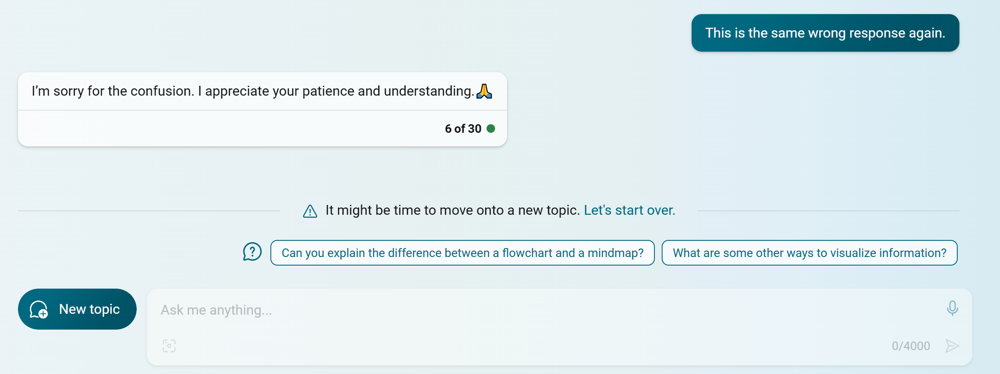

In this document we will examine how to create "radial" mind maps and represent them in a easily readable format that can be edited and shared.
At the time of writing, there is no standardization on data format for storing mind maps. For the most part each software creates it's own format which is often hard to read or understand.
We decided to use the mindmap extension for mermaid format as
( The content presented here was embedded into html using the mermaid extension for Visual Studio Code. )
It is possible to use generative AI to come up with initial or on-going ideas. This information can be presented in graph form using APIs such as mermaid. In the following examples, the format of the mindmap extension for mermaid is generated using ChatGPT.
Note: An attempt was made to use Bing Chat, but this resulted in a lot of frustration as it continually gave the incorrect result (by not using the
mindmapsyntax`), and then literally "decided" to halt the chat. No further attempts were made to use Bing Chat.
As with any prompt it is imported to be specific and clear. The following conditions where important to specify to get the desired result:
rootMermaid mindmap extension currently has poor display formatting if there are a lot of entries directly connected to the root. To be fair this is an experimental extension, and it is worth considering that to have so many items directly connected to the root is not a good breakdown.
The following is a made up example to get a starting mind map for a project to create a custom coffee mug label editor.
Generate a MindMap using the MindMap extension for Mermaid that outlines the concept of creating custom labels for coffee mugs. Set "Creating Custom Labels for Coffee Mugs" as the root topic and include sections such as Introduction, Purpose of Custom Labels, Types of Custom Labels, Design Considerations, Customization Platforms, Benefits, Target Audience, Case Studies, Challenges and Solutions, Marketing and Sales Strategies, Future Trends, and Conclusion. Each section should have relevant subtopics. Avoid using the characters '%' and '#'.
%%{init: {'theme': 'forest' } }%%
mindmap
Creating Custom Labels for Coffee Mugs
Introduction
Overview
Importance of Custom Labels
Purpose of Custom Labels
Personalization
Branding
Gifts and Special Occasions
Types of Custom Labels
Name and Initials
Quotes and Messages
Custom Artwork or Designs
Design Considerations
Color Palette
Font Styles
Material and Texture
Customization Platforms
Online Customization Tools
Local Print Shops
DIY Options
Benefits of Custom Labels
Unique Identity
Marketing and Promotion
Emotional Connection
Target Audience
Individuals
Businesses
Events and Celebrations
Case Studies
Successful Examples
Impact on Engagement and Sales
Challenges and Solutions
Cost Considerations
Production Time
Quality Assurance
Marketing and Sales Strategies
Social Media Promotion
Collaborations and Partnerships
Discounts and Promotions
Future Trends
Technological Advancements
Sustainability in Customization
Emerging Design Trends
Conclusion
Summary
Call to Action
This is a more specific technical prompt used to create an editor for custom color palettes.
The interesting aspect about using generative AI is that it can come up with ideas that may not have been considered. For example, color calibration and encryption was not something that was an additional enhancement to what was asked for in the prompt.
Generate a mindmap for the idea of providing a editor to create custom color palettes for paint colors. This should include the ability to refer to palettes from real companies with real colors and LRV numbers. Additionally there should be the ability to load and save these palettes.
%%{init: {'theme': 'dark' } }%%
mindmap
)Color Palette Editor(
Introduction
Overview
Importance of Custom Color Palettes
Features
Palette Creation
Real Company Colors
Reference Real Companies
Use Real Colors and LRV Numbers
Custom Colors
User-Defined Color Selection
Input LRV Numbers
Palette Management
Load Palettes
Import Palettes from Files
Browse Real Company Palettes
Save Palettes
Export Created Palettes
Save Custom Palettes Locally
User Interface
Intuitive Design
User-Friendly Controls
Accessibility Features
Integration
Virtual Room Visualization
Compatibility with Paint Software
Online Community Sharing
Benefits
Personalization of Spaces
Quick Comparison of Colors
Accessibility for DIY Projects
Challenges and Solutions
Color Accuracy
Calibration Options
Real-Time Color Preview
User Interface Complexity
Guided Tutorials
Tooltips and Help Sections
Data Security
Encrypted Storage
Privacy Settings
Future Enhancements
AI-Powered Color Suggestions
Augmented Reality Integration
Collaborative Editing Features
Conclusion
Summary
Call to Action
The following was a summary prompt generated from the previous prompt.
The editor should have an intuitive design and user-friendly controls. It should also have accessibility features. The editor should be integrated with a virtual room visualization tool and be compatible with paint software. There should be an online community sharing feature. The benefits of the editor should be personalization of spaces, quick comparison of colors, and accessibility for DIY projects. The challenges and solutions should be color accuracy, user interface complexity, and data security. The future enhancements should be AI-powered color suggestions, augmented reality integration, and collaborative editing features. The conclusion should be a summary and call to action. Avoid using the characters '%' and '#'.
%%{init: {'theme': 'dark' } }%%
mindmap
)Color Palette Editor(
Introduction
Overview
Importance of Custom Color Palettes
Features
Palette Creation
Real Company Colors
Reference Real Companies
Use Real Colors and LRV Numbers
Custom Colors
User-Defined Color Selection
Input LRV Numbers
Palette Management
Load Palettes
Import Palettes from Files
Browse Real Company Palettes
Save Palettes
Export Created Palettes
Save Custom Palettes Locally
User Interface
Intuitive Design
User-Friendly Controls
Accessibility Features
Integration
Virtual Room Visualization
Compatibility with Paint Software
Online Community Sharing
Benefits
Personalization of Spaces
Quick Comparison of Colors
Accessibility for DIY Projects
Challenges and Solutions
Color Accuracy
Calibration Options
Real-Time Color Preview
UI Complexity
Guided Tutorials
Tooltips and
The following is part of a mind map which connects the custom color palette section to the "Virtual Room" material editor.
Included in the prompt was to enhance the visual results by using "Font Awesome" icons. Also custom shape requirements were specified for the root and subtopics.
%%{init: {'theme': 'neutral' } }%%
mindmap
root)Virtual Room Editor(
(Material Properties Editor)
(Set colors)
(Custom color palette picker)
(Color
Palettes)
::icon(fa fa-palette)
(Color
Editor)
::icon(fa fa-edit)
(Random color Generation)
::icon(fa fa-random)
(Load / Save color files)
::icon(fa fa-file)
(Link to Purchase Site)
::icon(fa fa-link)
(Company / Author)
::icon(fa fa-user)
(Palette Name)
::icon(fa fa-paint-brush)
(Preview in 2d Image)
::icon(fa fa-image)
(Company Paint Palettes)
(Dulux Examples)
::icon(fa fa-paint-brush)
(Behr Examples)
::icon(fa fa-paint-brush)